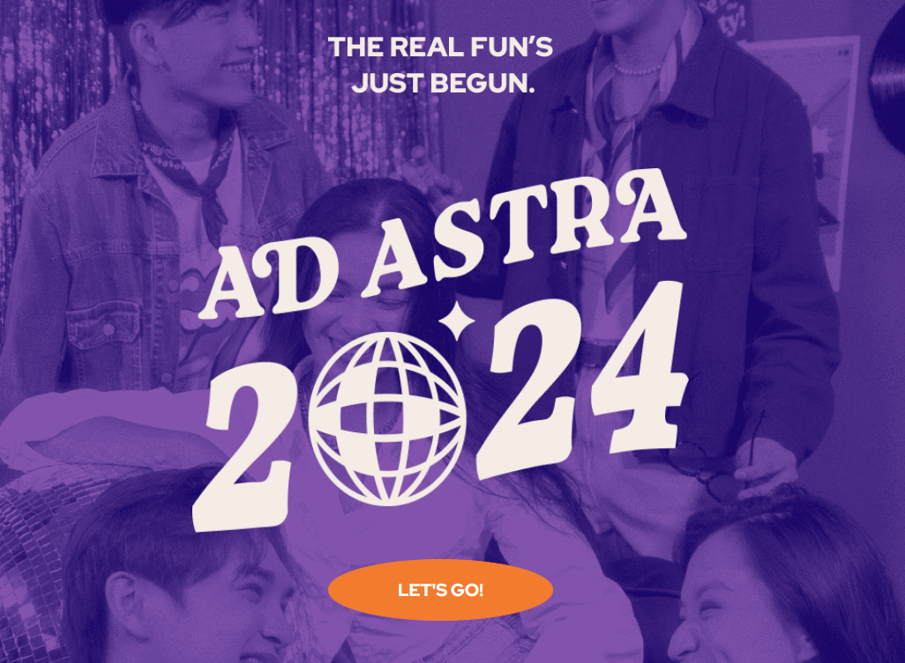
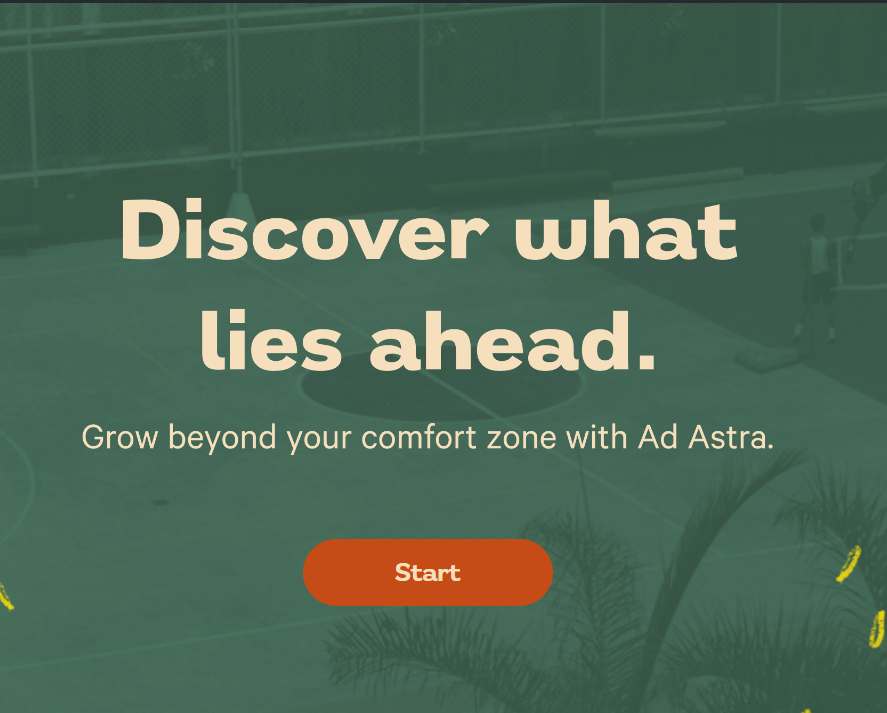
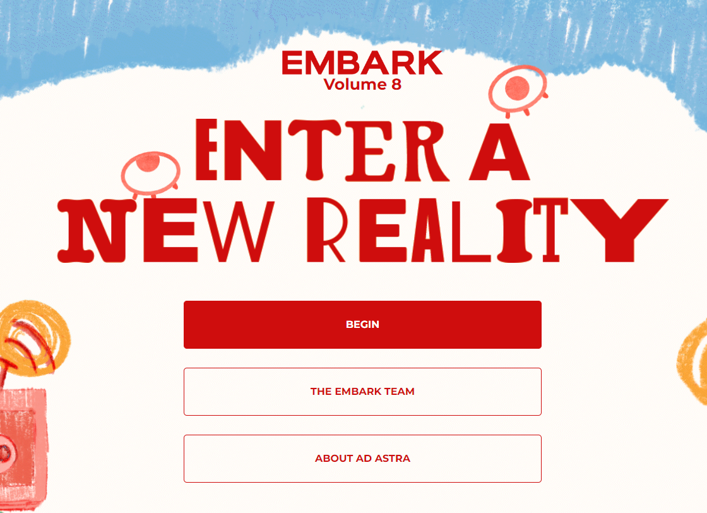
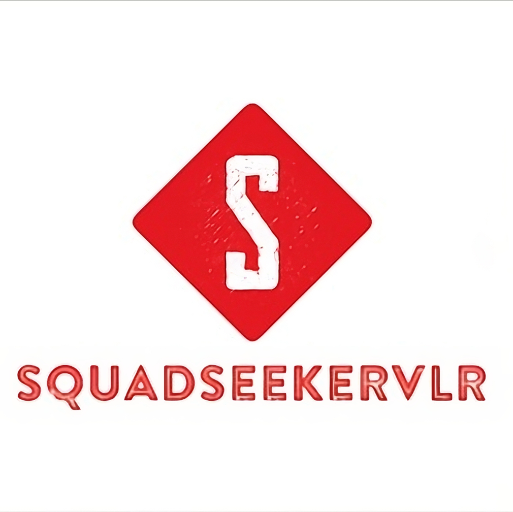
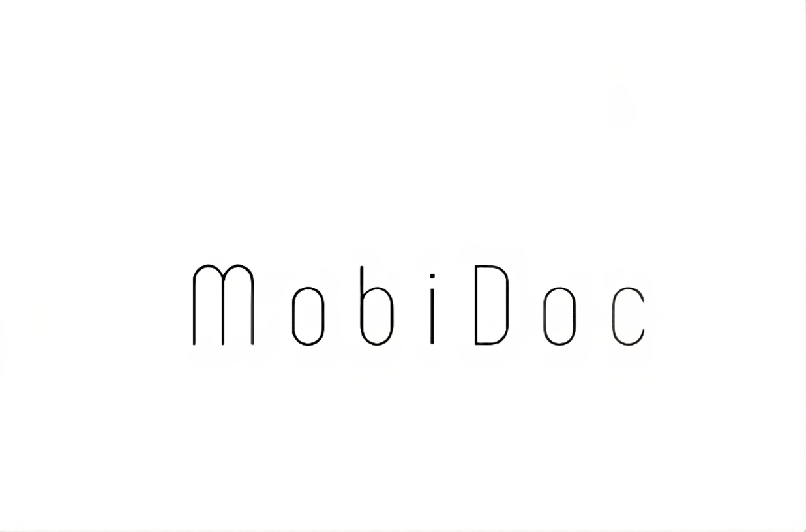
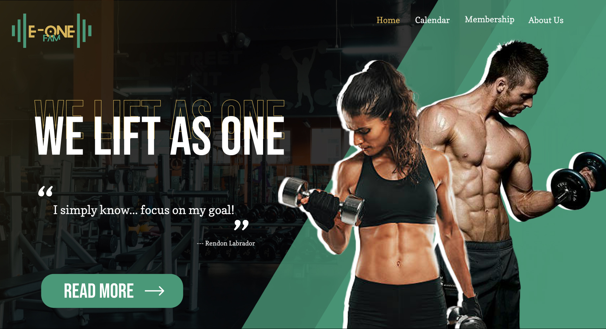

Latest Projects


Ad Astra Recruitment
Experience a streamlined recruitment process with our web-based application, designed exclusively for Ad Astra: The Benildean Yearbook. This efficient tool simplifies and enhances every stage of the recruitment journey, making it easier than ever to identify, evaluate, and onboard talented individuals.



